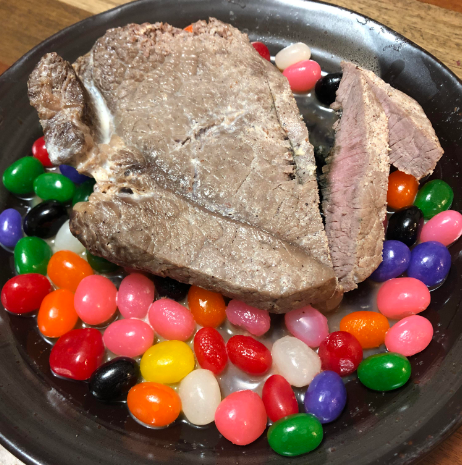

Milksteak

A delicious steak hard boiled in milk, served with jellybeans.
Harry Potter has a whole resturant dedicated to dishes inspired by the franchise, why can't we have one for Always Sunny? It might seem impractical or even repulsive to ingest what you see above. But trust me, don't judge a book by it's cover.
This is a simple and affordable recipe that only uses 7 simple ingredients! Best enjoyed in the fall season, paired with a Pumpkin Spice Latte!
Ingredients
- 1 medium 8.8oz flat iron steak
- 2 cups of whole milk (preferably Fight Milk) if you are a bodygaurd.
- 1/4 cups of honey
- 1/2 tsp of cinnamon
- 1/2 tsp of nutmeg
- 1 tsp of vanilla extract
- 1/2 cups of jelly beans (as garnish)
Steps
- Add milk, honey, cinnamon, nutmeg, and vanilla to a medium sized saucepan.
- Heat up the mixture, stirring until honey is dissolve.
- Bring mixture to a boil on medium high heat.
- Add the steak to the boiling milk for 5 minutes.
- Flip the steak to cook for another 5 minutes.
- Reduce heat to a simmer.
- Plate the steak and cut to check the inside. It should be boiled over hard
- Garnish with jelly beans